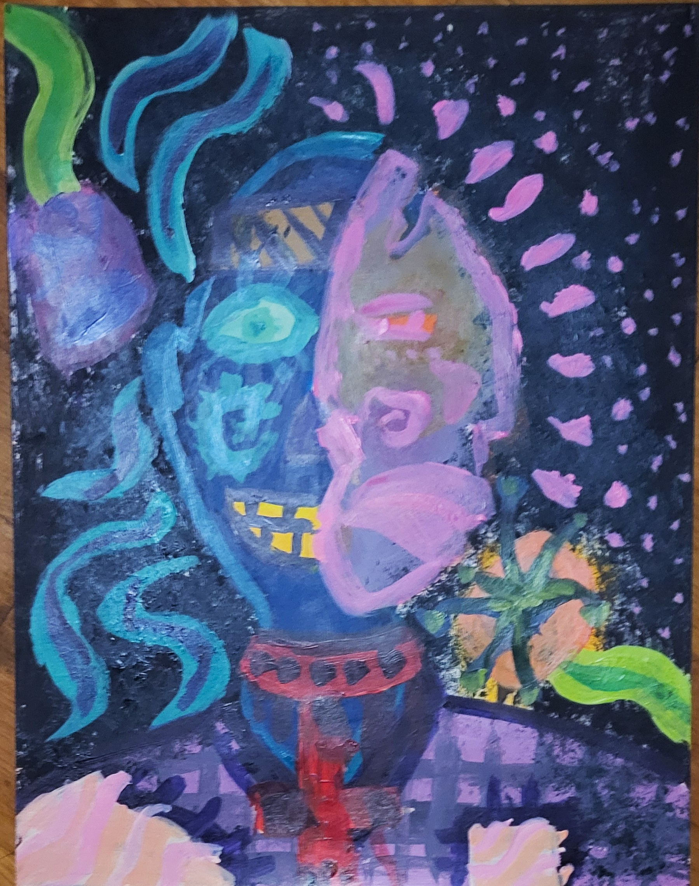
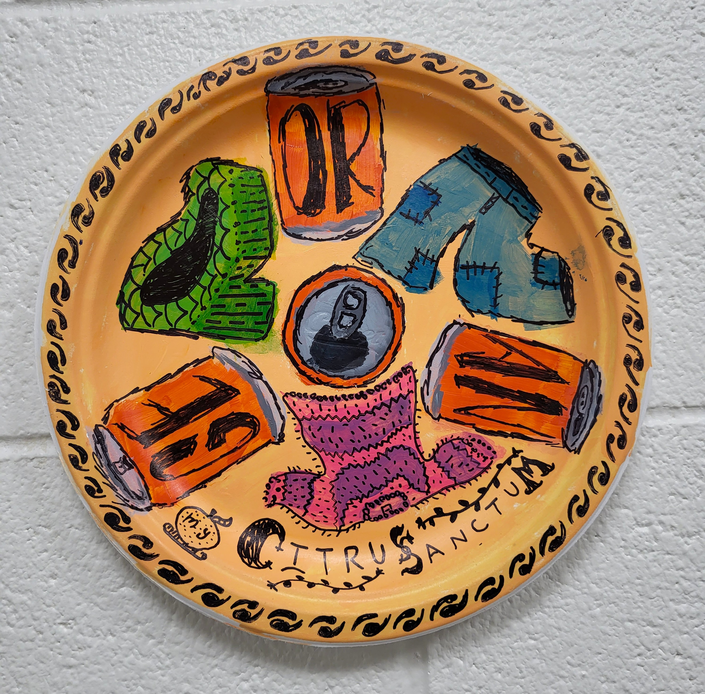
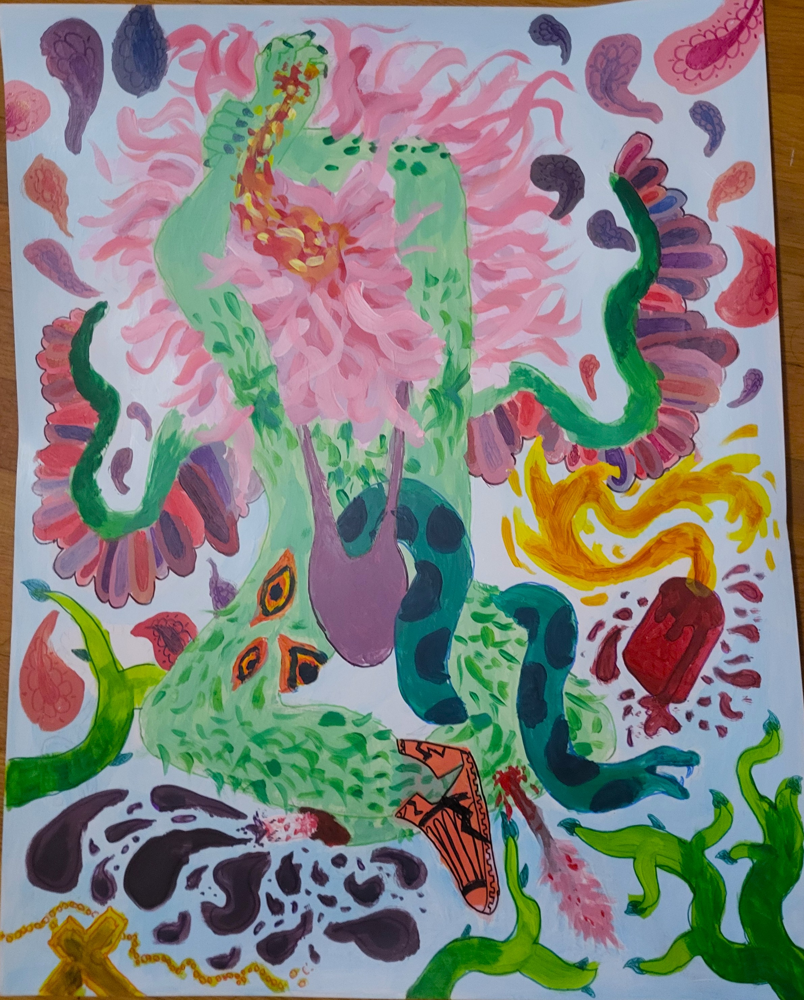

2D Design
This class was where I first got to use acrylic paint, and I've loved it ever since!

This painting was my first time making a full work on heavy paper, and I learned quite a lot while making it!
While its a bit rougher than I would have liked it to be, I really like how the colors layer on top of each other and the texture of the background.
The point of this peice was to show someone feigning sadness while secretly being happy, as shown by having a crying mask on their face hiding a grin underneath.

This assignment's goal was to depict a memorable meal from your life on a paper plate. I chose to depict when I was 8-10~ and I drank several (4) orange Crush's in my mom's closet while she was doing her taxes.
I had some issues controlling my paint while working on the plate, but lucky for me my teacher lent me a sharpie to draw outlines around my colors and add details. I really like how this peice came out, especially the way the colors drift in and out of their outlines.

This was my final for 2D Design, and I chose to paint my own interpretation of an angel based loosely on artistic depictions of Saint Sebastian. I spent quite a lot of time sketching the anatomy of the arms and legs only to cover it all up in the end! While it was a bit frustrating, I think it was a valueable lesson that not all work you put into a peice will be visible by the time you're done.
While I feel like the outlining and detailing of the peice (with my own alchohol markers) is a bit weaker than I wanted it to be, I really like how wispy and flowing the pink hair covering the face looks, and I love the color choices I made with the central figure.
Back To the Homepage